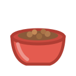
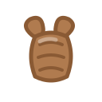
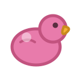
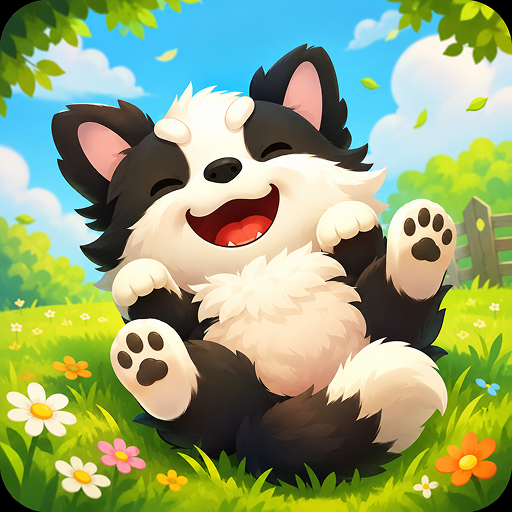
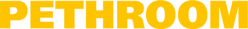
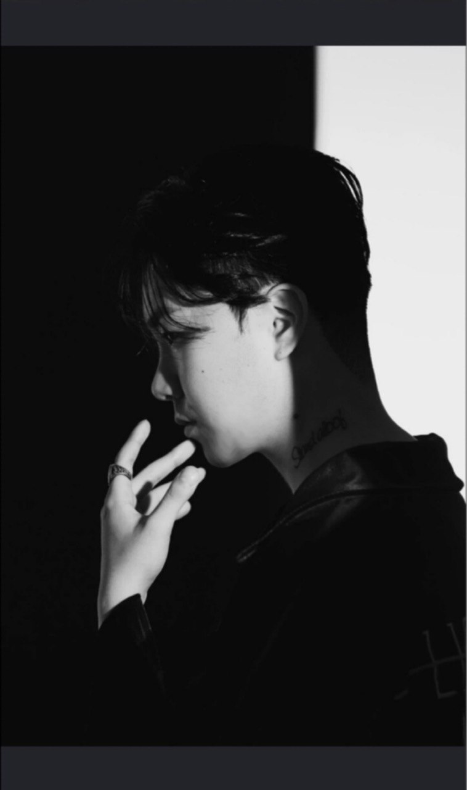

플레이하는 것도, 돌보는 것도, 사는 것도 — 전부 후원하는 행동이 됩니다.
한 번의 행동이 곧바로 한 그릇이 되는 건 아닙니다 — 모여서 목표에 닿아야 집행되고, 그 진행률을 게이지에 그대로 씁니다.
발랑에서 브랜드는 광고 지면이 아니라 상품 그 자체로 등장합니다.
밥·산책·교감 7종을 하러 매일 들어온다. 캐릭터견은 그동안 계속 그 옷을 입고 있다
디지털 쌍둥이를 먼저 착용해 보고 실물을 산다. 반품률을 낮추는 구조
옷을 본 화면에서 바로 자사몰로 넘어간다. 매장을 따로 찾아가지 않는다
Play & impact REAL dogs
가상 반려견을 돌보면 실제 보호소 개에게 물품이 간다. 그 개가 입양되면 유저에게 알려준다.
"가상 돌봄 → 실물 도착"이 이미 검증된 동선
TREAT은 보호소로 물품을 보낸다. 발랑은 내가 쓸 물건을 나도 사고, 팔린 만큼 보호견에게도 간다 — 매출이 나는 구조
기부금을 모아 집행하는 게 아니라, 상품이 팔리면 브랜드가 집행한다. 협찬이 끊겨도 약속이 무너지지 않는다
물품 후원에서 끝내지 않고 봉사·임시보호·입양까지, 그 사람에게 맞는 하나를 추천한다
과금 재화로 구매. 뽑기는 만들지 않는다 — 확률 공시 규제도, 사행성도 없다
매출의 10%는 공동 창고로 가안
게임에서 본 옷을 자사몰에서 실제 결제. 스킨은 함께 지급
구매액 비례 포인트 적립 + 기부 적립
시즌당 1~2개 브랜드와 계약. 인게임 상시 노출 + 판매 연동 약정
쿠폰이 자사몰 구매로 이어진 비율이 성과 지표
| 브랜드가 내는 것 | 브랜드가 얻는 것 |
|---|---|
| 상품 공급 (옷·사료·용품) | 게임 내 상시 노출 + 새 판매 채널 |
| 판매 연동 구호 약정 | 판매 실적과 함께 나오는 집행 증빙 사회공헌에 썼다는 증거 |
| 협찬 쿠폰 | 신규 구매 전환, 브랜드 사용 경험 |
주문 하나에 표가 하나. 중복 통보가 와도 한 번만 반영된다
통보가 유실되면 30분마다 주문 내역과 재대조
반품되면 스킨을 회수한다. 착용 중이면 유예 후 사유 안내
마음은 이미 있습니다. 꺼리는 이유 3위가
"입양 방법이나 절차를 잘 모른다" — 19.5%.
막는 건 돈이 아니라 정보와 노출입니다.
보호소는 돌봄만으로 벅차 개 한 마리당 소개를 계속 만들 수 없다. 그 몫을 AI가 쓴다
협찬이 끊기면 무너지는 약속을 하지 않는다. 팔린 만큼만 집행된다
버려졌다는 과거 대신 지금 보호받는 상태로 부른다. UI·AI 프롬프트까지 전부
목표 500벌 → 브랜드가 보호소에 방한용품 집행
내 기여 1벌 (+0.2%) — 구매 즉시 게이지에 반영
"내 구매가 게이지를 얼마나 올렸는지"를 그 자리에서. 인과가 보이지 않으면 다시 사지 않는다
최초 등록 1회, 물품 도착 시 사진 1장 + 확인. 보호견 정보는 공공 API에서 동기화한다
조용히 사라지는 캠페인을 만들지 않는다. 집행 내역은 전건 공개
애착이 먼저 생겨야 지갑도 열립니다. 그래서 커머스 앞에 매일 돌보는 경험을 둡니다.
구매까지만 하고 말아도 사업은 돈다
후원·물품 단계가 커머스와 겹친다
AI가 준비 상태를 보고 다른 걸음을 권한다
A · "퇴근하고 소파에서 같이 넷플릭스 보다 잠들면 좋겠어요"
B · "주말마다 등산 데리고 다니려고요"
선택형 문항만 받으면 이 둘은 같은 추천을 받습니다. 조건 값이 같으니까요. 체크박스엔 "시간 여유 있음"인데 문장엔 "요즘 너무 지쳐서"라고 쓴 사람 — 문장을 우선하는 판단은 규칙으로 못 씁니다.
정량 응답과 자유 서술을 함께 해석한다. 충돌하면 문장을 우선한다
출력이 목록이 아니라 한 마리다 — 견종·성격·크기를 갖춘 캐릭터견. 유저는 그걸 고르고, 이름을 짓고, 키우기 시작한다
그 캐릭터견의 명세가 그대로 보호견 조회 조건이 된다. 별도 매칭 엔진이 없다 — 사용자가 키우는 개가 그 역할을 한다
닮은 개가 뜰 때 유저는 이미 몇 주째 그 개를 키우고 있습니다. 돌봄·플레이 데이터가 쌓일수록 조회 조건도 갱신돼, 시간이 지날수록 정확해집니다
| # | 문항 | 근거 |
|---|---|---|
| Q1 | 기본 여건 | 여건 변화 20.2% |
| Q2 | 함께할 시간 | 시간 25.7% |
| Q3 | 월 지출 | 지출 35.2% |
| Q4 | 짖음·훼손이 생기면? 서술 | 행동 42.7% |
| Q5 | 어떤 하루를 보내고 싶나요? 서술 | 견종 추천 |
취조당하는 기분이 안 든다
내가 쓴 문장을 읽고 추천한다
Unity 6 WebGL · 모바일 세로 393×852
이동 20 → 10회로 축소
3매치 전 사이클 구현 완료 · 40화면 확정 · BGM·효과음 자체 제작
행동력 · 게임 입장 전용
기본 재화 · 모은 만큼 어디 쓸지 고른다
과금 재화 · 매출이 들어오는 지점
| 전환 | 이유 | |
|---|---|---|
| 육포 → 뼈다귀 | O | 과금 유저의 정상 경로 |
| 뼈다귀 → 육포 | X | 환금성 차단 게임 재화를 현금처럼 못 쓰게 |
| 뼈다귀 → 발바닥 | X | 무한 인플레이션 |
블록은 전부 애견용품. 모은 만큼 그대로 보상

터뜨리면 +300점 · 뼈다귀 5
우리가 필요한 건 사진 한 장과 공고 기본 데이터뿐입니다. 소개 문구는 AI가 씁니다 — 그래서 나라가 바뀌어도 붙이는 비용이 거의 같습니다.
유기동물 보호소 공고 API
한 곳으로 전 사이클을 돌렸다
| 지역 | 공개 API | 규모 · 조건 |
|---|---|---|
| 전국 | 국가동물보호정보시스템 | 공공데이터포털 · 전국 보호소 공고 |
| 북미 | Petfinder API | 입양 대기 수십만 마리 · 동물복지단체 1만+ · 키 발급 필요 |
| 북미 | RescueGroups.org | 비영리 · 공개 데이터 요청 수 제한 없음 |
| 호주 | PetRescue.com.au | REST API · 전국 구조단체 공고 검색 |
어느 단계에서든 보호소가 하는 일은 등록 1회 + 수령 확인으로 늘지 않습니다
